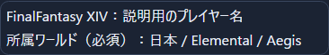
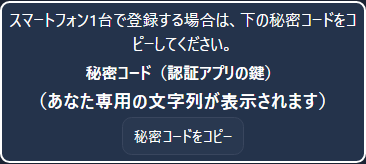
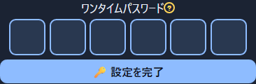
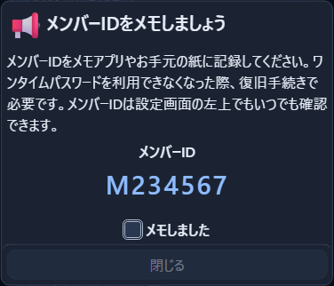
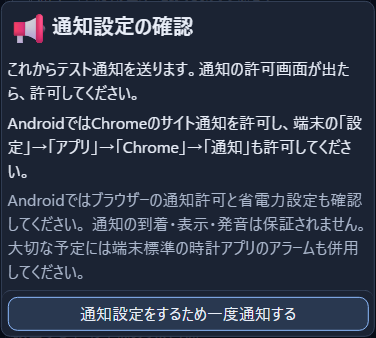
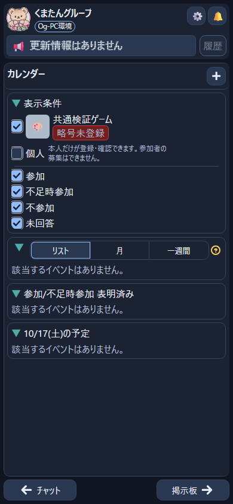

スマートフォン1台で進める方へ
主な画像はAndroidです。iPhoneの方はiPhoneの補足も確認してください。写真の中のボタンは押せません。自分の登録画面に戻って、同じ名前のボタンを押してください。
「押す」は、画面に指を一度触れて離す操作です。「長押し」は、触れたまま少し待つ操作です。下の続きは、画面を指で下から上へなぞると読めます。
画像内の名前・メンバーID・コードは説明用です。自分の画面の内容を使ってください。
1招待内容を確かめる
届いた招待URLを一度押します。
URLは「https://」などで始まる、画面を開くための文字です。押して登録画面が開いたら、自分のプレイヤー名、ゲーム、所属先が合っているか確認します。

✓ 自分の登録内容が合っていれば、次へ進みます。
間違っている場合は登録を進めず、招待を送った人へ「名前や所属先が違います」と伝えてください。
「この端末でログイン状態を維持」は、次に使うときのログインを減らす設定です。他の人と共用する端末では選ばないでください。
2認証アプリを入れて開く
認証アプリは、ログインに使う6桁の数字を表示するアプリです。すでにGoogle 認証システムを使っている方は手順3へ進めます。
① 登録画面にあるストアの案内を押します。
Androidは「Google Play」、iPhoneは「App Store」です。下の案内からもストアを開けます。
② アプリ名と提供元を確認して、インストールします。
Androidのアプリ名は「Google 認証システム」、提供元は「Google LLC」です。iPhoneでは「Google Authenticator」と表示されます。
③ 初めての説明画面では「使ってみる」を押します。
次の画面でGoogleアカウントを選ぶか、「アカウントなしで使用」を選びます。どちらでも登録できます。アカウントなしの場合、認証情報はそのスマートフォンに保存されます。Google公式の説明 ↗
3登録画面へ戻り、秘密コードをコピーする
認証アプリを開いている方は、次の「アプリを切り替える」を参考に、招待URLを開いたブラウザーへ戻ってください。
「秘密コードをコピー」を一度押します。

これで、長い文字列をスマートフォンが一時的に覚えます。これが「コピー」です。まだ入力欄に入らなくても大丈夫です。
✓ ボタンを押したら、次はGoogle 認証システムへ切り替えます。
秘密コードと、この後に出る6桁の数字は別のものです。秘密コードは認証アプリへ登録するために使います。他の人へ送らないでください。
4Google 認証システムへ切り替える
登録画面は閉じません。スマートフォンには、画面を閉じずに別のアプリへ移る操作があります。
Chrome / Safari
認証システム
開いているアプリの一覧で、使いたい方を押す
画面の下に横長の線がある場合
画面の一番下から指を少し上へ動かし、そのまま少し止めてから離します。開いているアプリが並んだら、左右になぞってGoogle 認証システムを探し、押します。
画面の下に「□」「≡」などのボタンがある場合
開いているアプリを並べるボタンを押し、Google 認証システムを選びます。ボタンの形や場所は端末によって違います。
iPhoneでホームボタンがある場合は、そのボタンを素早く2回押すとアプリの一覧を開けます。Apple公式の切替手順 ↗
✓ Google 認証システムの画面になれば、次へ進みます。
5名前と鍵を入れる
① 「セットアップキーを入力」を押します。
すでに数字の一覧がある場合は、先に「＋」を押します。スマートフォン1台で進める方は「QRコードをスキャン」ではなく、文字を入れる方を選びます。
② 「コード名」に、分かる名前を入力します。
例：くまたんグループ。入力欄を一度押すと文字を入れるための画面が出ます。見分けるための名前なので、自分で分かる名前にします。
③ 「鍵」の欄を長押しします。
欄に指を触れたまま少し待ち、「貼り付け」が出たらそれを押します。先ほど覚えさせた長い文字列が入ります。これが「貼り付け」です。長い文字列を一文字ずつ打ち直す必要はありません。
✓ 「鍵」の欄に長い文字列が入りましたか？ 空のままなら貼り付けに困ったときを確認してください。
④ 「時間ベース」のまま、「追加」を押します。
66桁の数字を登録画面へ入れる
① 今追加した名前の、6桁の数字を確認します。
この数字は時間がたつと変わります。上の「123456」は見本なので、入力しないでください。自分の認証アプリに出ている数字を使います。
② アプリの一覧から、登録画面へ戻ります。
手順4と同じ切替操作で、招待URLを開いたChromeやSafariを選びます。同じブラウザーに複数の画面がある場合は、ギルドのロゴと登録案内がある画面を選んでください。
③ 6つの枠へ数字を入れ、「設定を完了」を押します。

左の枠を一度押し、数字を左から順番に入力します。「設定を完了」を押して、次の画面が出るまで待ちます。認証アプリで数字が変わっていたら、新しい数字を使ってください。
登録が終わっても、Google 認証システムに追加した項目は消さないでください。今後のログインでも使います。
7メンバーIDを控える
「メンバーIDをメモしましょう」が出たら、表示された文字と数字を紙やメモアプリへ正確に控えます。認証アプリを使えなくなったときの復旧に必要です。

控えたら「メモしました」の四角を一度押してチェックを入れ、「閉じる」を押します。画像の「M234567」ではなく、自分の画面のIDを控えてください。
登録時にメンテナンス画面が出た場合は、通常の画面が使えるようになってから、この案内が表示されます。
8通知を設定して、登録完了
① 「通知設定をするため一度通知する」を押します。

② 通知の確認が出たら「許可」を押します。
確認画面が出ない場合は、すでに許可している、以前に拒否しているなどの場合があります。通知が届かないときは、通知の対処方法を確認してください。
③ 「通知設定完了」を押します。
操作が終わると、このボタンが表示されます。通知をもう一度試したい場合は「もう一度テスト通知する」を押します。
④ カレンダーなどのメイン画面が出れば完了です。

✓ 登録はここまでです。メンバーIDの控えと認証アプリを残しておいてください。
iPhoneで進める方へ
このページの実画像はAndroidです。iPhoneの実画面写真としては使用していません。ボタン名や位置が異なる場合があります。
- App StoreでGoogleの「Google Authenticator」を入れます。
- スマホ1台の場合は、秘密コードをコピーし、認証アプリの「＋」からセットアップキーを入力する手順で進めます。
- 入力欄を長押しして「ペースト」と出た場合は、それが「貼り付け」です。
- アプリの切替は手順4を参照してください。
- Webアプリの通知を使うには、Safariで開き、共有メニューから「ホーム画面に追加」して、そのアイコンから開きます。Safariの版によって共有メニューの場所や表示が異なります。追加後は、ホーム画面にできたギルドのアイコンを押し、その画面で通知を設定してください。Apple公式：ホーム画面への追加 ↗
PCなど、別の画面がある方へ
- PCなどの画面で招待URLを開き、名前・所属先を確認します。
- スマートフォンでGoogle 認証システムを開き、「＋」→「QRコードをスキャン」を選びます。
- カメラの許可が出たら許可し、PCなどに表示されたQRコードへスマートフォンのカメラを向けます。
- 認証アプリにギルドの項目と6桁が表示されたら、その6桁を招待URLを開いた画面へ入力して「設定を完了」を押します。
- 手順7のメンバーIDの控えから続きを行います。
この方法では、秘密コードのコピーや貼り付けは不要です。同じスマートフォンに表示したQRコードを、そのスマートフォンのカメラへ向ける必要もありません。
困ったとき
「貼り付け」が出ない・文字列が入らない
まず登録画面へ戻り、「秘密コードをコピー」をもう一度押します。認証アプリへ切り替え、「鍵」の欄の内側を長押ししてください。文字を入れるための画面にクリップボードの案内が出る端末もあります。6桁の数字をコピーする操作とは別です。
6桁の数字を入れても進めない
別のサービスの数字ではなく、今回追加したギルドの数字か確認します。数字が切り替わったら、新しく表示された6桁で試してください。繰り返し通らない場合は、スマートフォンの日時が自動設定か確認します。制限や待ち時間が表示されたら、その案内に従ってください。Google公式の確認項目 ↗
登録画面が見つからない
アプリの一覧から、招待URLを開いたChromeやSafariへ戻ります。ブラウザーで複数の画面を開いている場合は、開いているタブの一覧からギルドの登録画面を探してください。見つからなければ、届いた招待URLをもう一度開き、表示された案内に従います。
招待URLが使えない・残り時間がなくなった
「QRコードを再表示」がある場合は押し、新しい案内を使ってください。期限切れや無効と表示されて進めない場合は、招待を送った人へ、その表示を伝えて新しい案内を依頼してください。説明ページにある見本のコードでは登録できません。
通知が届かない・許可の確認が出ない
Androidはブラウザーのサイト通知と、端末の「設定」→「アプリ」→使っているブラウザー→「通知」を確認します。iPhoneはSafariからホーム画面へ追加したWebアプリで通知設定を行います。通知を拒否したことがある場合は、端末やブラウザーの設定で許可に直します。省電力などの設定によっても届かない場合があります。